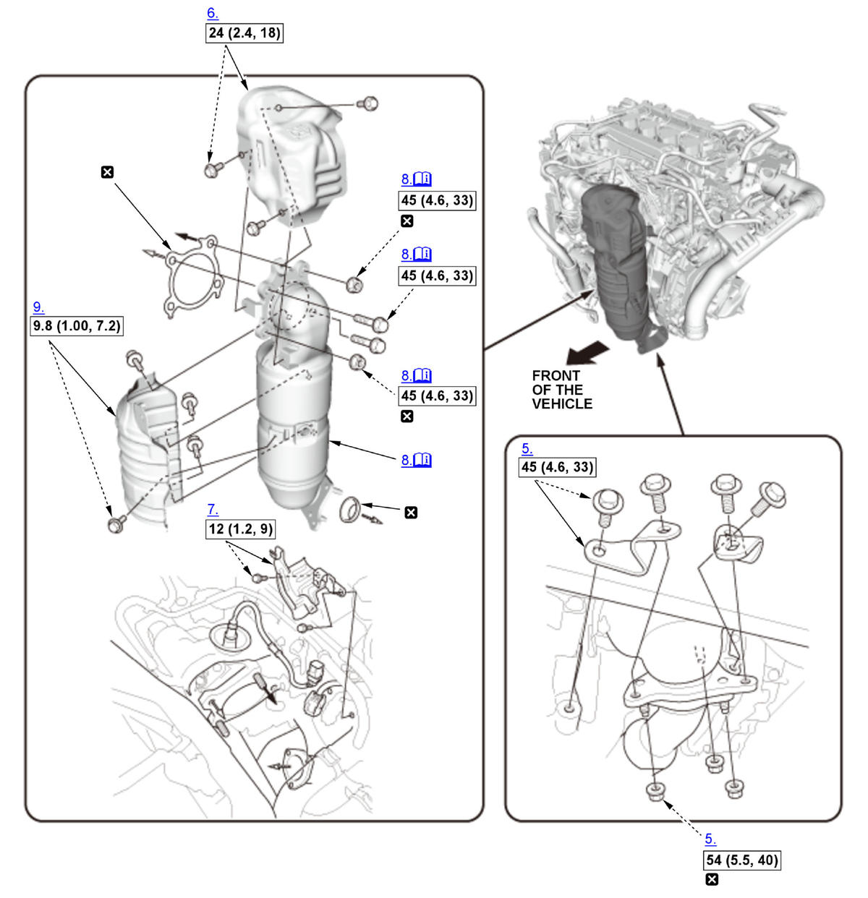
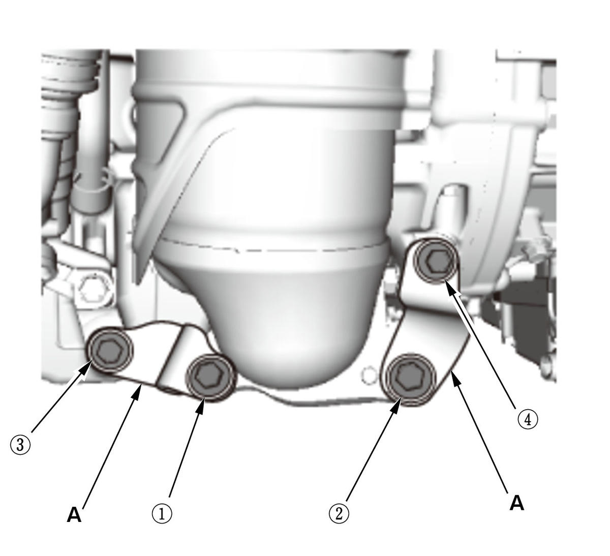

Removal and Installation: Procedure
NOTE:
Numbered call-outs in figure pertain to list numbers in following procedure.
Fig 1: Exploded View Of Catalytic Converter Components With Torque Specifications (L15B7/L15BA/L15BY)

Courtesy of HONDA, U.S.A., INC. |
Detailed information, notes and precautions |
 |
Torque: N.m (kgf.m, lbf.ft) |
 |
Replace |
- Turbocharger Joint - Remove
- Secondary HO2S - Remove
- Engine Undercover - Remove
- Engine Undercover Lid - Remove
- TWC Self-Locking Nuts and TWC Bracket - Remove
- Exhaust Chamber Cover - Remove
- Bracket - Remove
- TWC Assembly - Remove

Courtesy of HONDA, U.S.A., INC.Note for installation
- Before installing the TWC brackets (A), confirm the bolts and nuts fixing the TWC to the turbocharger are tightened to the specified torque.
- Tighten the TWC bracket mounting bolts in the numbered sequence shown.
- TWC Cover - Remove (if necessary)
- All Removed Parts - Install
1. Install the parts in the reverse order of removal with new gaskets and new self-locking nuts.